관악산 실경 비교 — 참고 사진 대비 구간 7곳 (1차·2차 촬영)
작성: 산디자인 · 2026-11-03 · 근거 문서: docs/실경-구간별-참고사진.md · 촬영 스크립트: scripts/capture-silgyeong.mjs
꼭 읽어 주세요.
- 2차 촬영(2026-11-03, 산풍경): 우선순위 1~2를 고친 뒤
LABEL=2 node scripts/capture-silgyeong.mjs로 찍었습니다. 실시간 시각·날씨 기능이 생겨서 1차와 같은 조건이 되도록 촬영 스크립트에 time=10:00&weather=clear를 고정했습니다. 변경 기록: docs/변경기록-2026-11-03-실경비교-1-2순위.md
- 이 1차 촬영은 산풍경 작업 이후입니다. 이 카드가 넘어오기 전에 산풍경의 일주문·구간 풍경 작업이 이미 반영되어 있어서, 작업 전 상태는 따로 찍지 못했습니다(그 상태를 다시 만들려면 오래된 커밋과 용량이 큰 자산을 따로 꾸려야 해서 하지 않았습니다). 산풍경이 이 표대로 고친 뒤에는
LABEL=2 node scripts/capture-silgyeong.mjs로 2차를 찍어 오른쪽에 붙입니다.
- 눈으로 직접 대조한 것은 입구(대표 첨부 사진)와 미디어허브 2001344의 계곡·정상 비석 사진 일부뿐입니다. 나머지 구간은 산리서치 문서의 서술과 비교했고, 사진 이미지를 직접 보지 못했습니다. 문서에 '서술 기준'이라고 표시했습니다.
- 대표 첨부 사진 외의 참고 사진은 파일로 넣지 않았고 링크만 적었습니다. 대표 첨부 사진은 이 폴더에 복사해 나란히 놓았습니다.
- 입구 화각은
?entrancePhoto=11(일주문 앞 11m)입니다. 이를 위해 src/main.js에서 거리 값을 받도록 한 줄 바꿨습니다(값이 없으면 기존 8.8m).
- 구간 3(계곡)과 4(제1광장)는 위치가 겹칩니다. 지시 번호 순서를 따랐습니다. 풍경 시점은 모두 가을 오전 10시(고도 29°) 기본 햇빛입니다.
한눈에 보는 우선순위
| 순위 | 내용 | 구간 |
|---|
| 1 (결함) | 정상 공중 파편, 계단 옆면 질감 늘어남 | 7 |
| 2 (큰 차이) | 깔딱고개 나무계단·데크 없음 / 정상 비석 없음 / 입구 바닥 흰색 노출과 지붕 곡선 | 5, 7, 1 |
| 3 (분위기) | 길가 돌 색(검푸름→회백)과 규칙적 배치, 나무 줄기 주황 색, 흰색 사면 노출 | 2, 3, 4, 1 |
| 4 (시설·전망) | 호수공원 시설, 제1광장 시설, 연주암 경내, 암릉·전망 트임 | 2, 4, 6 |
1. 입구 일주문·광장 (GPX 0m)
입구에서 일주문 정면 11m 뒤, 눈높이 1.6m, 시야각 55°. 대표 첨부 사진과 나란히.
1차 캡처(산풍경 작업 후)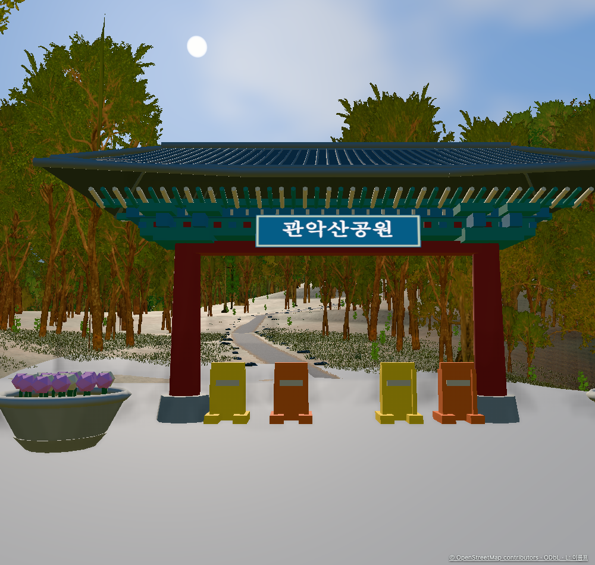
대표 첨부 사진(비교 기준)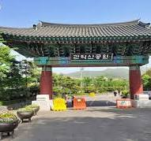
| 참고 | 대표 첨부 사진(일주문 정면, 광장, 먼 능선이 보이는 구도) |
|---|
| 대조 방법 | 직접 대조함 |
|---|
| 맞는 점 | - 겹처마 기와지붕, 녹·청 단청, 붉은 기둥 2개와 돌 받침, 파란 바탕 흰 글씨 현판 '관악산공원'이 모두 있음
- 노랑·주황 바리케이드와 석재 화분(꽃)이 문 앞에 있음
- 양옆 활엽수, 문 너머 포장길이 보임
- 하늘은 푸른색
|
|---|
| 다른 점(산풍경 전달) | - 지붕이 납작한 판처럼 보임. 사진은 처마 끝이 위로 들린 곡선이고 지붕 두께가 훨씬 두꺼움
- 기둥이 사진보다 가늘고 높음(지붕:기둥 비례). 사진은 기둥이 짧고 지붕이 큼
- 바닥이 거의 흰색으로 날아감. 사진은 어두운 회색 포장
- 바리케이드는 4개 모두 같은 상자 모양. 사진은 납작한 가로 차단봉 형태에 가깝고 노랑·주황이 섞임
- 문 너머 먼 능선이 안 보임. 사진은 능선이 문 사이로 보임
- 나무 줄기가 주황·갈색으로 두드러지고 잎이 올리브색. 사진은 선명한 초록
|
|---|
| 고칠 우선순위 | - 바닥 노출과 색(회색 포장으로)
- 지붕 곡선(추녀 들림)과 두께, 기둥 비례
- 문 사이로 먼 능선이 보이게 나무 간격 정리
- 바리케이드 모양
- 나무 줄기 색
|
|---|
| 2차 촬영(산풍경 수정 후) | 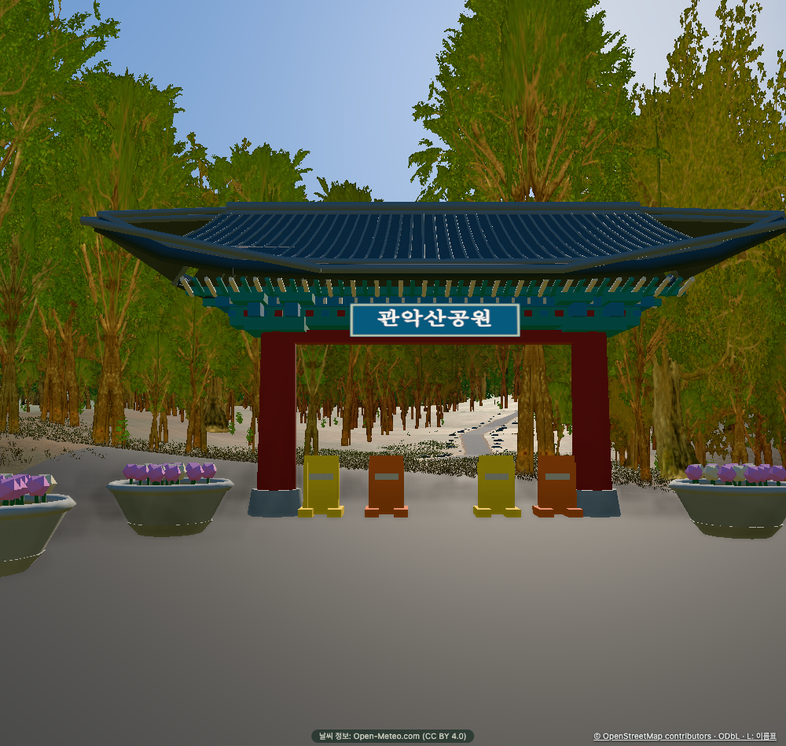 - 반영 광장 바닥을 어두운 회색 포장(#3d3f3d)으로 바꿔 흰색 날림을 없앴음
- 반영 지붕면을 오목 곡선으로 바꾸고 네 귀(추녀)를 들어 올림. 처마 끝 아래에 두께 띠를 넣음
- 반영 지붕 폭 10.1→11.4m, 깊이 3.8→4.6m, 높이 약 1.3→1.9m로 키우고 기둥을 굵게(지름 0.52→0.68m) 해 지붕:기둥 비례를 사진 쪽으로 맞춤. 치수는 사진 비례로 추정
- 남음(3순위 이하) 문 사이 먼 능선, 바리케이드 모양, 나무 줄기 색
|
|---|
2. 입구~호수공원 (GPX 720m)
포장길을 따라 걷는 방향, 눈높이 1.6m. 참고 사진은 정자 '자하정'이 있는 호수공원 풍경.
1차 캡처(산풍경 작업 후)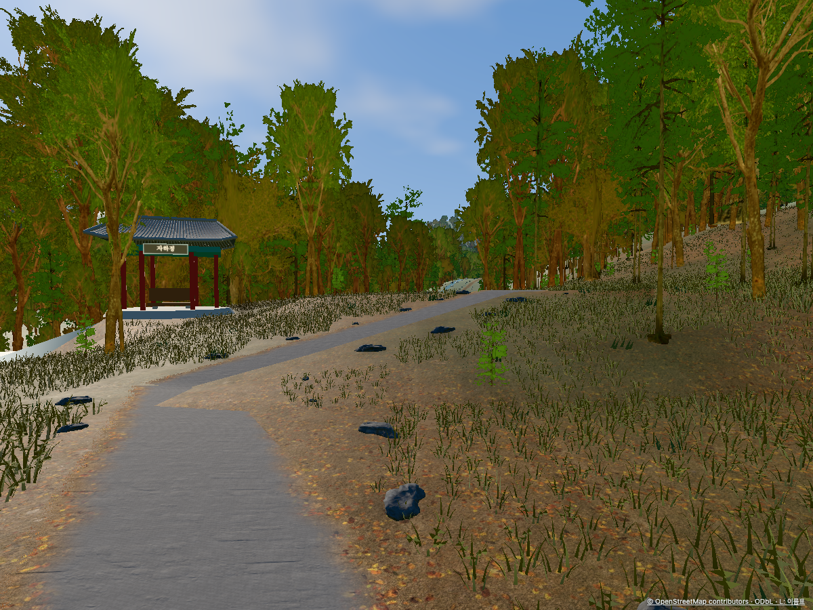
참고 사진(링크만 — 파일 없음)사진 파일은 넣지 않았습니다.
아래 링크에서 확인하세요.
| 참고 링크 | |
|---|
| 대조 방법 | 문서 서술 기준(사진 이미지는 직접 확인 못 함) |
|---|
| 맞는 점 | - 한옥 정자 '자하정'이 길 옆에 있음(기와 지붕, 붉은 기둥, 현판, 벤치)
- 좁은 포장길과 그늘진 활엽수 숲
- 낙엽 깔린 흙 노면
|
|---|
| 다른 점(산풍경 전달) | - 정자 앞에 호수·물이 없음(참고는 정자가 호수 가에 있음)
- 분수, 나무다리, 수변무대, 1997 기념비 등 호수공원 시설이 안 보임
- 길가 풀과 돌이 규칙적으로 일정하게 놓여 인공적
- 나무 줄기 색이 주황 위주
- 황톳길 구간 없음
|
|---|
| 고칠 우선순위 | - 자하정 앞 호수·물 표현
- 호수공원 시설(분수, 다리) 추가
- 길가 돌 배치를 불규칙하게
- 나무 줄기 색
|
|---|
| 2차 촬영(산풍경 수정 후) | 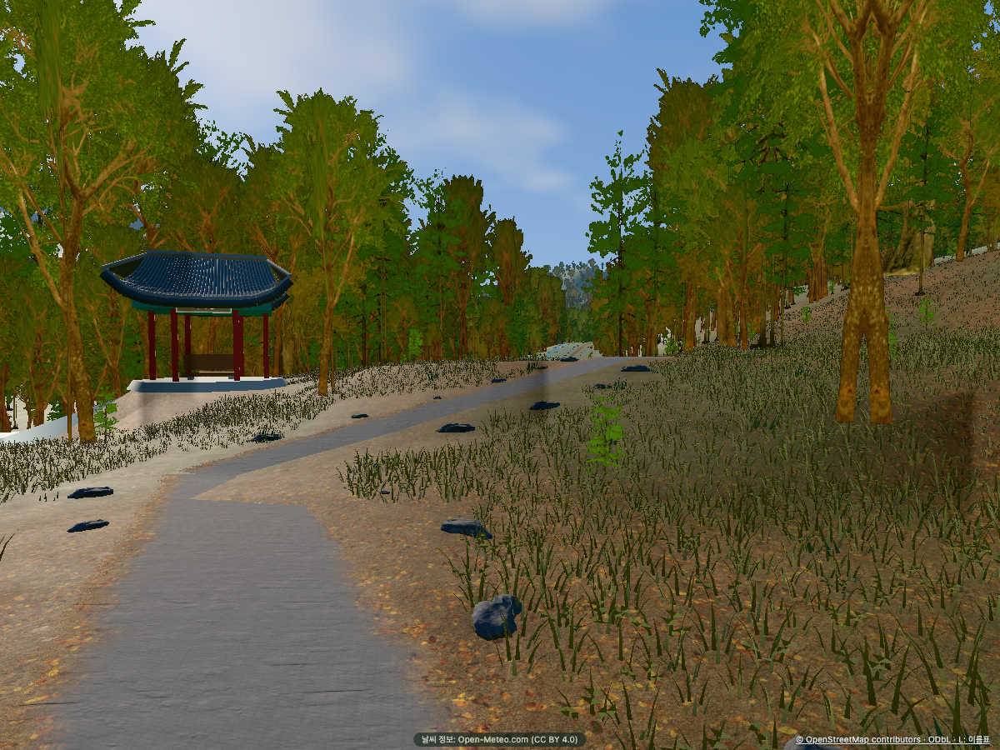 - 이번 차수에서는 이 구간을 고치지 않았음(우선순위 1~2 범위 밖). 비교용으로 같은 조건(10시 맑음)에서 다시 찍음
|
|---|
3. 계곡 구간 (GPX 약 1,600m)
계곡 옆 흙길을 따라 걷는 방향. 참고 사진은 여름(2025-08)·겨울 후기가 중심이고 가을 사진은 없음.
1차 캡처(산풍경 작업 후)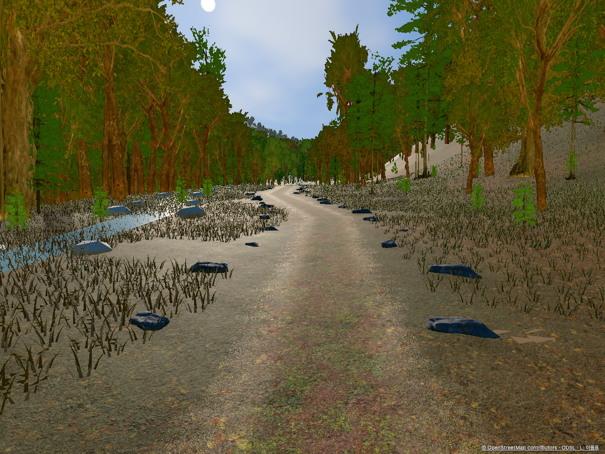
참고 사진(링크만 — 파일 없음)사진 파일은 넣지 않았습니다.
아래 링크에서 확인하세요.
| 참고 링크 | |
|---|
| 대조 방법 | 문서 서술과 3-c 사진 일부를 눈으로 본 것 기준 |
|---|
| 맞는 점 | - 계곡 옆 그늘 숲길, 맑은 얕은 물, 해가 보이는 하늘이 서술과 맞음
- 큰 활엽수가 길 양옆을 감쌈
- 멀리 산 능선 일부가 보임('금새 보이는 정상부' 서술과 비슷)
|
|---|
| 다른 점(산풍경 전달) | - 계류가 폭 좁은 파란 띠 하나뿐. 참고는 넓은 바위 바닥 위로 물이 얕게 퍼짐
- 길가 큰 돌이 검푸른 납작판이고 같은 간격으로 늘어섬. 실제 화강암은 회백색으로 모양과 크기가 제각각
- 돌계단이 없음. 후기는 '대부분 돌계단 아니면 계단'이라고 함
- 풀이 짧고 검은 갈색 선 모양으로 고르게 퍼짐
- 오른쪽 사면이 흰색으로 날아감
|
|---|
| 고칠 우선순위 | - 길가 돌 색을 회백색으로, 크기·간격 불규칙하게
- 계류 폭과 바위 바닥 표현
- 돌계단 노면 추가
- 풀 색과 밀도
- 사면 노출
|
|---|
| 2차 촬영(산풍경 수정 후) | 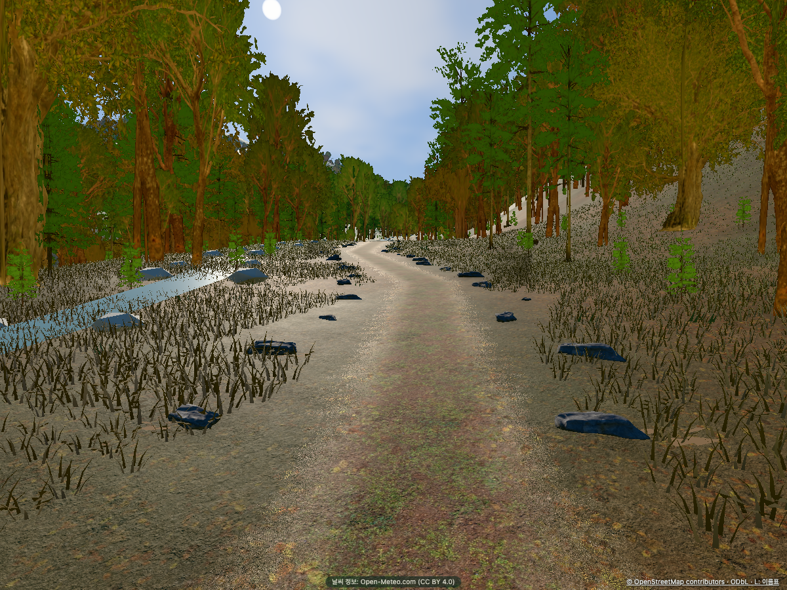 - 이번 차수에서는 고치지 않았음. 같은 조건에서 다시 찍음
|
|---|
4. 제1광장과 갈림길 (GPX 1,070m)
표지판이 있는 갈림길 광장을 바라봄. 참고 사진은 대부분 겨울.
1차 캡처(산풍경 작업 후)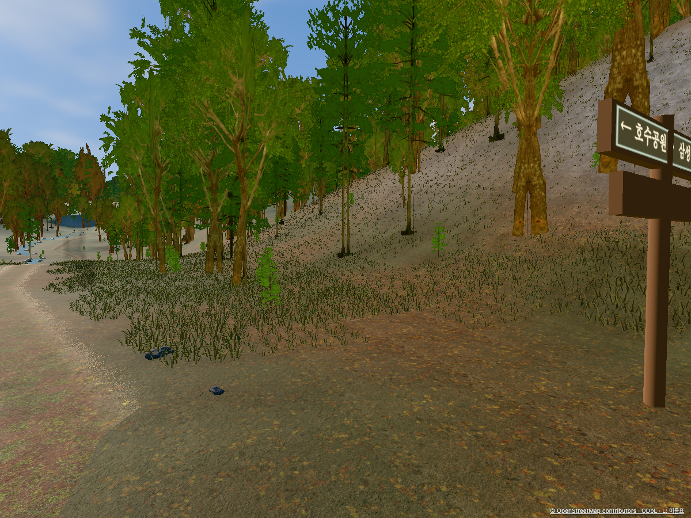
참고 사진(링크만 — 파일 없음)사진 파일은 넣지 않았습니다.
아래 링크에서 확인하세요.
| 참고 링크 | |
|---|
| 대조 방법 | 문서 서술 기준 |
|---|
| 맞는 점 | - 갈림길 목재 이정표가 있고 '← 호수공원, 삼성산' 방향이 적혀 있음(서술과 일치)
- 평평한 비포장 광장, 낙엽 쌓인 흙바닥, 숲으로 둘러싸임
|
|---|
| 다른 점(산풍경 전달) | - 게이트볼장, 공중화장실, 벤치, 운동기구, 클린하우스 같은 광장 시설이 화면에 없음
- 오른쪽 사면이 흰색에 가깝게 노출됨
- 줄기가 굵고 이상한 모양의 나무가 한 그루 있음(줄기가 두 가닥으로 갈라진 인물 형태)
- 이정표가 한 개만 있고 지도 안내판은 없음
|
|---|
| 고칠 우선순위 | - 사면 노출(흰색)
- 이상한 나무 줄기 모양
- 쉼터 시설(벤치, 화장실, 안내판)
- 지도 안내판
|
|---|
| 2차 촬영(산풍경 수정 후) | 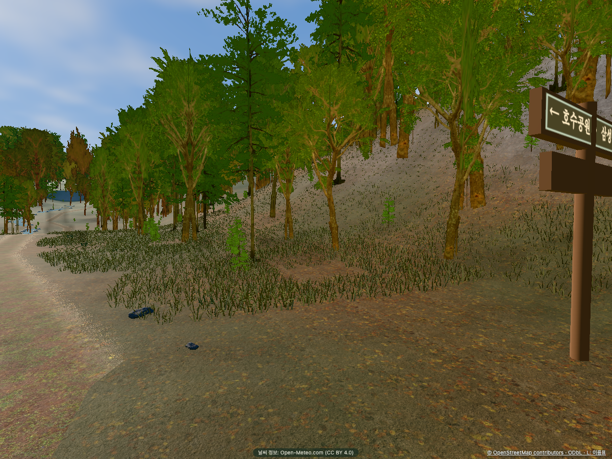 - 이번 차수에서는 고치지 않았음. 같은 조건에서 다시 찍음
|
|---|
5. 깔딱고개 (GPX 4,050m)
급경사 직선 오르막. 참고는 나무계단·데크 계단이 길게 이어지고 위쪽은 돌과 바위가 섞임.
1차 캡처(산풍경 작업 후)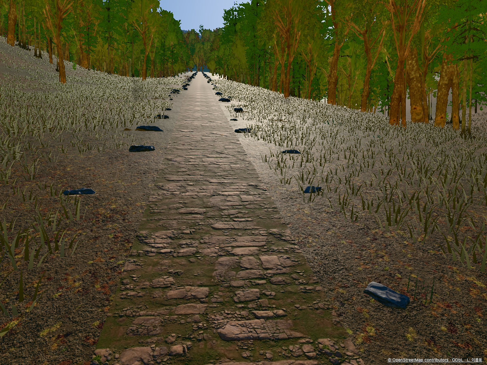
참고 사진(링크만 — 파일 없음)사진 파일은 넣지 않았습니다.
아래 링크에서 확인하세요.
| 참고 링크 | |
|---|
| 대조 방법 | 문서 서술 기준. 4,050m 위치가 실제 깔딱고개 계단 시작부인지 확인 필요 |
|---|
| 맞는 점 | - 급경사로 곧게 올라가는 길이 보임
- 양옆이 풀 사면이고 앞쪽 끝에 하늘이 열림
|
|---|
| 다른 점(산풍경 전달) | - 나무계단·데크·난간이 없고 돌 판석이 깔린 길임. 가장 큰 차이
- 길이 직선이고 폭이 일정함
- 나무가 계곡보다 성기다는 서술과 달리 양옆 나무가 빽빽함
- 풀이 하얗게 번져 밝음
- 이정표 '연주샘, 연주대(깔딱고개)' 없음
|
|---|
| 고칠 우선순위 | - 나무 계단과 데크, 안전 난간 추가
- 이정표 추가
- 양옆 숲 밀도 낮추기
- 풀 밝기
|
|---|
| 2차 촬영(산풍경 수정 후) | 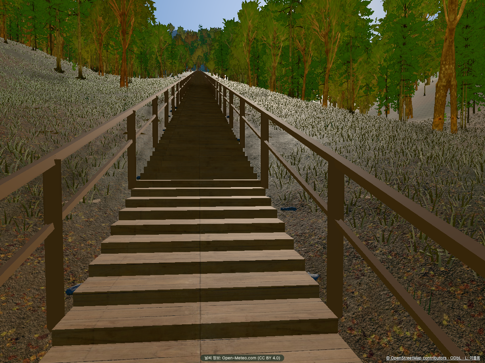 - 반영 4구간 안의 노면 순서를 흙→바위→나무계단으로 바꿔, 나무계단이 약 3,670m부터 능선(5구간 데크, 약 4,400m)까지 이어지게 함. 4,050m 지점이 이제 나무계단
- 반영 나무계단 양옆에 안전 난간(기둥 2.4m 간격, 손잡이 0.95m·중간대 0.5m) 추가. 보행 접지와 분리돼 있고 충돌은 없음
- 반영 나무계단 시작부에 '연주샘·연주대 ↑ 깔딱고개' 이정표 추가(문구·위치 추정)
- 남음 양옆 숲 밀도, 풀 밝기(3순위)
|
|---|
6. 연주암과 능선 (GPX 4,540m)
연주암 건물이 보이는 능선. 참고는 암릉·전망·소나무, 연주암 대웅전.
1차 캡처(산풍경 작업 후)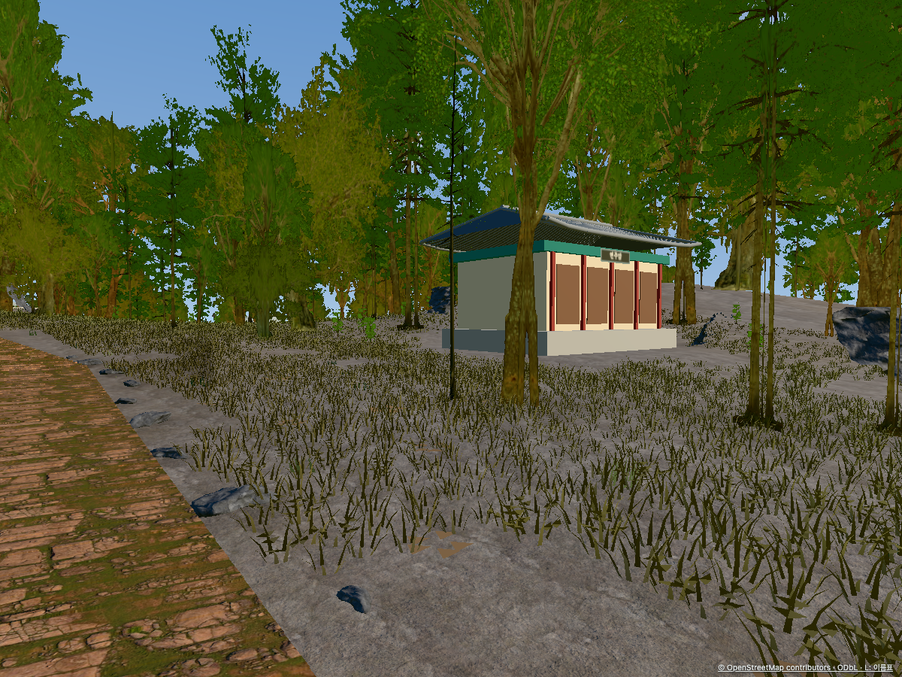
참고 사진(링크만 — 파일 없음)사진 파일은 넣지 않았습니다.
아래 링크에서 확인하세요.
| 참고 링크 | |
|---|
| 대조 방법 | 문서 서술 기준 |
|---|
| 맞는 점 | - 사찰 건물이 있고 붉은 기둥, 창호, 녹색 단청 띠, 기와 지붕이 보임
- 길가 판석 노면
- 하늘이 푸름
|
|---|
| 다른 점(산풍경 전달) | - 건물이 작고 벽이 연노랑 단색으로 평면적. 참고는 대웅전과 부속 건물이 모인 사찰 경내
- 암릉과 '기이한 바위'가 없고 큰 활엽수 숲으로 막힘. 참고는 능선 위가 트이고 암릉이 있음
- 판석 길 색이 붉은 주황색으로 지나치게 진함
- 전망(과천 방향 시가지)이 안 보임
- 소나무·키 작은 나무 대신 키 큰 활엽수가 가득
|
|---|
| 고칠 우선순위 | - 능선 암릉과 시야 트임
- 연주암 경내 규모와 건물 구성
- 판석 색
- 수종(소나무)
|
|---|
| 2차 촬영(산풍경 수정 후) | 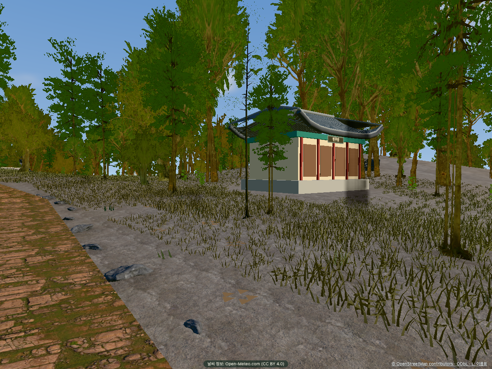 - 이번 차수에서는 고치지 않았음. 같은 조건에서 다시 찍음
|
|---|
7. 연주대 정상 (GPX 4,930m)
정상 가까운 바위 길에서 연주대 쪽. 참고는 '冠岳山' 새긴 둥근 비석, 기상레이더 돔, 응진전, 서울 전망.
1차 캡처(산풍경 작업 후)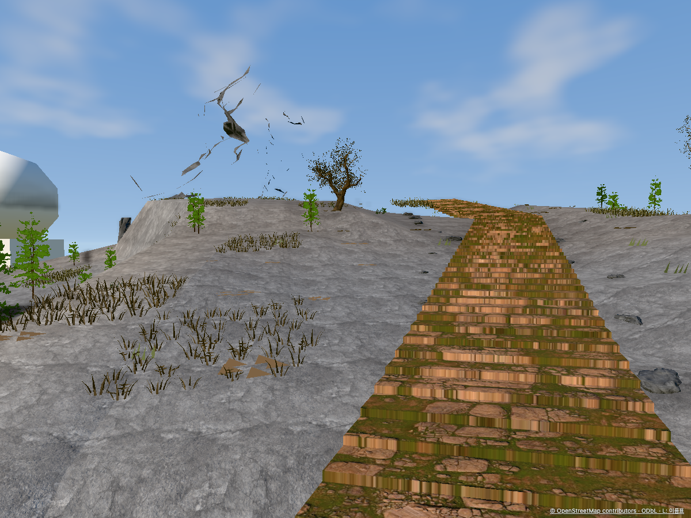
참고 사진(링크만 — 파일 없음)사진 파일은 넣지 않았습니다.
아래 링크에서 확인하세요.
| 참고 링크 | |
|---|
| 대조 방법 | 3-c 사진의 비석을 눈으로 확인, 나머지는 문서 서술 기준 |
|---|
| 맞는 점 | - 나무가 거의 없는 회색 바위 정상부, 푸른 하늘과 구름
- 왼쪽에 레이더 돔이 보임
- 돌계단 길이 정상으로 이어짐
|
|---|
| 다른 점(산풍경 전달) | - 화면 왼쪽 위 공중에 회색 조각 파편이 떠 있음(렌더 결함으로 보임)
- 돌계단 옆면 질감이 세로로 늘어나 줄무늬로 보임
- '冠岳山' 새긴 비석이 안 보임. 참고 사진의 중심 피사체
- 응진전, 인파, 연등, CCTV가 안 보임
- 바위가 단색 회색으로 평평. 참고는 갓 쓴 모양의 울퉁불퉁한 바위
- 서울 도심 전망이 안 보임(이 시점에서는 방향상 하늘만 보임)
|
|---|
| 고칠 우선순위 | - 공중 파편 결함 제거(결함이라 최우선)
- 계단 옆면 질감 늘어남 수정
- 정상 비석 위치와 모양
- 바위 표면 질감
- 응진전, 시설
|
|---|
| 2차 촬영(산풍경 수정 후) | 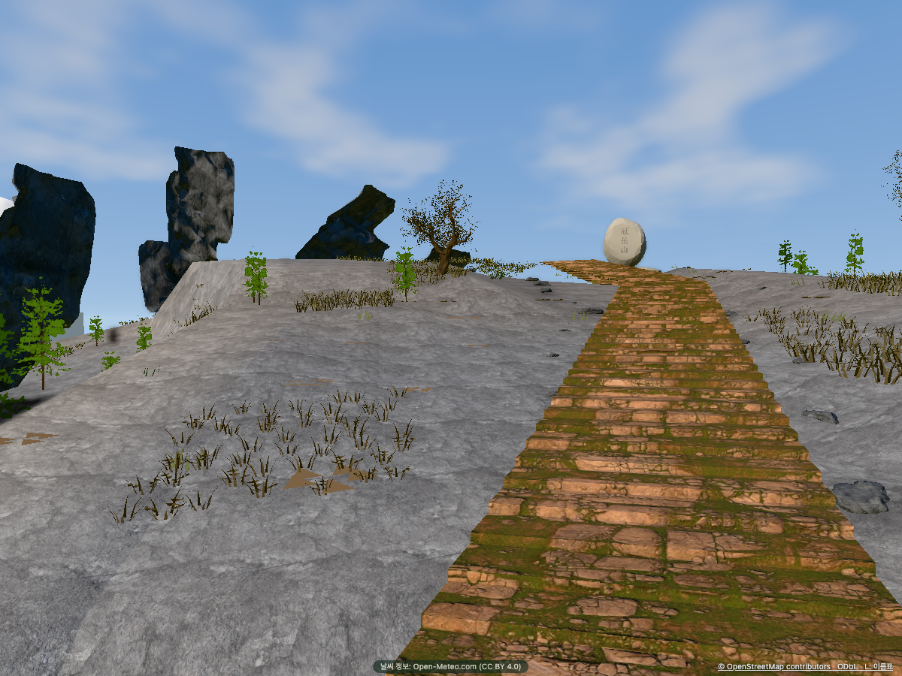 - 반영 공중 파편 제거. 원인은 뒷면이 뚫린 절벽면 스캔 바위(rock_face_01·02)를 뒤에서 볼 때 앞면 조각만 보이던 것. 이 두 모델만 양면으로 그려 온전한 바위로 보이게 함
- 반영 돌계단 옆면(챌면) 질감이 세로로 늘어나던 문제 수정. 챌면의 세로 UV를 단 높이만큼 진행시킴
- 반영 '冠岳山'을 새긴 둥근 자연석 정상석을 받침돌 위에 추가. 정상 직전 마루(가장 높은 길 위 점) 옆에 두어 오르는 길에서 바로 보이고, 앞면이 올라오는 쪽을 봄. 위치·치수 추정
- 남음 바위 표면 질감, 응진전·시설, 서울 전망 방향
|
|---|